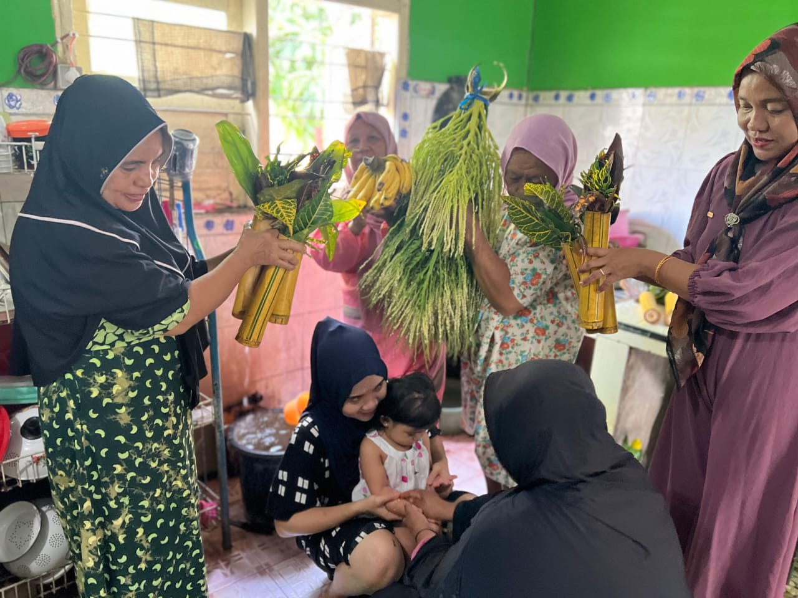
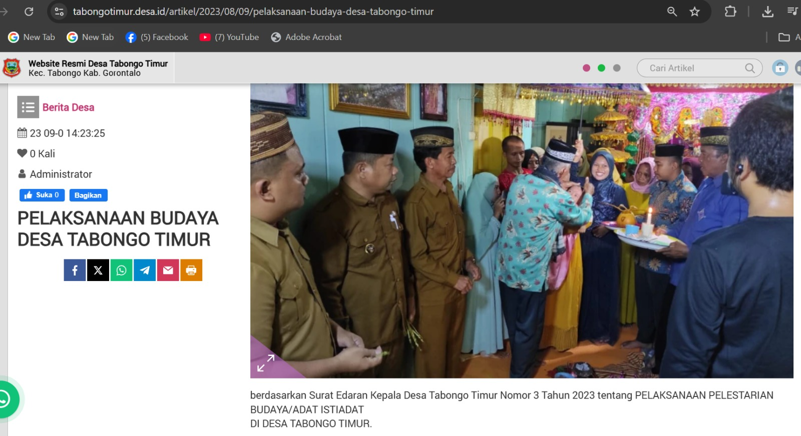

<div class="row gy-2 gy-md-4 py-2 py-md-4 g-2 g-md-4">
    <div class="col-md-8">
        <div class="card">
            <div class="card-header bg-info" data-bss-disabled-mobile="true" data-aos="fade-up" data-aos-duration="800"
                style="padding-left:60px;"><span class="badge rounded-pill bg-primary position-absolute"
                    style="margin:3px 0 0 -50px;">V.1.1</span><span><a
                        href="https://drive.google.com/drive/folders/1NABD1qCYEkbg-czGA3ttuKOgxH2kWzK6?usp=drive_link"
                        target="_blank"> Kesenian, adat istiadat dan/atau motto/slogan/jargon dan/atau Upaya perangkat
                        desa beserta elemen masyarakat mensosialisasikan pencegahan korupsi dengan memadukan kearifan
                        lokal setempat yang dilengkapi narasi dari 9 nilai antikorupsi dan diupload diwebsite dan
                        media&nbsp;sosial (baik video maupun artikel) </a></span></div>
            <div class="card-body text-center p-2 p-md-4" data-bss-disabled-mobile="true" data-aos="fade-up"
                data-aos-duration="800"><iframe width="100%" height="315"
                    src="https://www.youtube.com/embed/xU-Z5l4dCi0?si=Js_7_IxhUNc1qIHW" title="deklarasi"
                    frameborder="0" allowfullscreen=""></iframe></div>
            <div class="card-footer text-center"><a
                    href="https://drive.google.com/drive/folders/1NABD1qCYEkbg-czGA3ttuKOgxH2kWzK6?usp=drive_link"
                    type="button" class="costumbutton1"><span class="costumbutton1-text"><span>Lihat Video
                            Lainnya</span></span><span class="costumbutton1-icon"><i
                            class="fas fa-arrow-right"></i></span></a></div>
        </div>
    </div>
    <div class="col-md-4"><span class="text-light bg-primary rounded-pill position-absolute m-3 p-2 mt-3 fs-7"
            data-bss-disabled-mobile="true" data-aos="fade-up" data-aos-duration="800">V.1.2 </span>
        <div class="text-center bg-info rounded p-4 feature-item"><a href="assets/img/documents-2-1.jpg"
                target="_blank"></a>
            <h6 class="my-2">Peraturan/Surat Keputusan/Surat Edaran tentang mengenai budaya lokal, hukum adat, kegiatan
                kemasyarakatan yang mendorong upaya pencegahan korupsi </h6><a
                href="https://drive.google.com/drive/folders/1yU6BaVZLJ_ApRuON0WVyogJ2SorSNZLs?usp=drive_link"
                type="button" class="costumbutton1" target="_blank"><span class="costumbutton1-text"><span>Lihat
                        Dokumen</span></span><span class="costumbutton1-icon"><i
                        class="fas fa-arrow-right"></i></span></a>
        </div>
    </div>
    <div class="col-md-6 mb-auto">
        <div class="card h-100 shadow-sm">
            <div class="card-header" data-bss-disabled-mobile="true" data-aos="fade-up" data-aos-duration="800"
                style="padding-left:60px;"><span class="badge rounded-pill bg-primary position-absolute"
                    style="margin:3px 0 0 -50px;">V.1.3</span><a
                    href="https://drive.google.com/drive/folders/1bK8vvAeqFNfXkLRKQGbH-P75A-_KhqUE?usp=drive_link"
                    target="_blank">Dokumentasi kegiatan mengenai budaya lokal/hukum adat/kegiatan kemasyarakatan yang
                    mendorong upaya pencegahan korupsi. </a></div>
            <div class="card-body p-2 p-md-4"><a href="assets/img/budaya.jpeg" target="_blank"></a></div>
        </div>
    </div>
    <div class="col-md-6 mb-auto">
        <div class="card h-100 shadow-sm">
            <div class="card-header" data-bss-disabled-mobile="true" data-aos="fade-up" data-aos-duration="800"
                style="padding-left:60px;"><span class="badge rounded-pill bg-primary position-absolute"
                    style="margin:3px 0 0 -50px;">V.1.4</span><a target="_blank"
                    href="https://drive.google.com/drive/folders/1KCbIXhN3d9JqhS2DRlA6RTpbAxMn5M8Y?usp=drive_link">Screenshoot
                    publikasi digital secara rutin kegiatan pada poin 3 di atas. </a></div>
            <div class="card-body p-2 p-md-4"><a href="assets/img/514.jpeg" target="_blank"></a></div>
        </div>
    </div>
    <div class="col-md-8">
        <div class="card">
            <div class="card-header bg-info" data-bss-disabled-mobile="true" data-aos="fade-up" data-aos-duration="800"
                style="padding-left:60px;"><span class="badge rounded-pill bg-primary position-absolute"
                    style="margin:3px 0 0 -50px;">V.1.5</span><span><a
                        href="https://drive.google.com/drive/folders/1l7wZLV2r364O8z9PFGI8CY-4LQ_yckM_?usp=drive_link"
                        target="_blank"> Bukti masyarakat mengetahui budaya lokal/hukum adat yang menggambarkan 9 nilai
                        antikorupsi : Berani, Jujur, Mandiri, Peduli, Adil, Disiplin, Kerjakeras, Tanggungjawab,
                        Sederhana (Kuisioner atau video wawancara) </a></span></div>
            <div class="card-body text-center p-2 p-md-4" data-bss-disabled-mobile="true" data-aos="fade-up"
                data-aos-duration="800">
                <a href="assets/img/KUISIONER.jpg" target="_blank">
                    
                </a>
            </div>
        </div>
    </div>
</div>